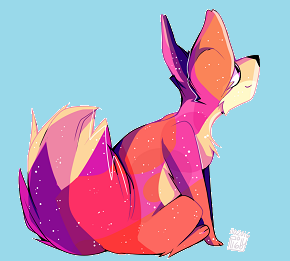

I was born in Brooklyn, New York in Brooklyn Hospital in 2000. I live there for at least 6 years. During those 5 years, my mom and dad were a bit on edge since 9/11 happened. In result from that, we moved to Ware Shoals, South Carolina-- to find peace of mind.
Living in Ware Shoals for about one year, I had my first exotic pet, an Iguana named Harry. Harry was a trouble-maker; he liked to play with the bathroom tissues and pop birthday balloons. When I turned 7, I had my second exotic pet, Mr. Fuzzy, a non-venomous tarantula. I only had him for a year before donating him to a local zoo because we had to move to a new house in Greenwood, and the residents there didn't appreciate "creepy crawly friends".
We lived in Greenwood for 4 more years. After that my dad grew tired of driving 45 minutes from Greenwood to Greenville, so our (and his) solution to that is to move to Greenville.
When we moved, I attended Beck Academy 7th through 8th grade. And then to J.L Mann, from 9th to 10th grade. In the summer of 2015, I adopted my third pet, a ginger tabby named Tiger! He was originally named Carrot, but with different family and friend decisions, he now has three names; Carrot, Tiger, and Cheddar. He is a very friendly cat that made friends with the next door neighbor kitten, Spooky! And Tiger also has weird behavior; he acts like a dog. He plays fetch with you and he likes his belly being rubbed.
I am now 16 years old and currently still living in Greenville and attending J.L Mann High School. Tiger is now a year (and a few months) old. I only live with my mom and dad now, but soon I have to leave the nest and prepare myself for college. I have two nephews and a niece. My half brother is getting married soon! I told him when, but he says he doesn't know.
I am boggling my brain about what and where I want to be in the future. I have an interest in astronomy, programming and the visual arts. And I don't know how I can mix the three together to make a perfect sandwich. I have a few idols that give me inspiration. Like sarehkee .
I went to a college fair and got several ideas about where I want to go, but I'm still deciding. There was a school here that showed what they are about and I am considering if I want to go there... college hunting is so difficult.
To be honest, I am a little scared of the future. I don't know how I can fulfill all of my interests at once. It seems that I have to ditch one in order to fulfill another. But I do want to become an animator, game developer, and concept artist for games. The part about astronomy... I guess studying the stars will be a hobby, and maybe I can use it as an idea holder... but right now, I view of the future and where I want to end up is fuzzy.